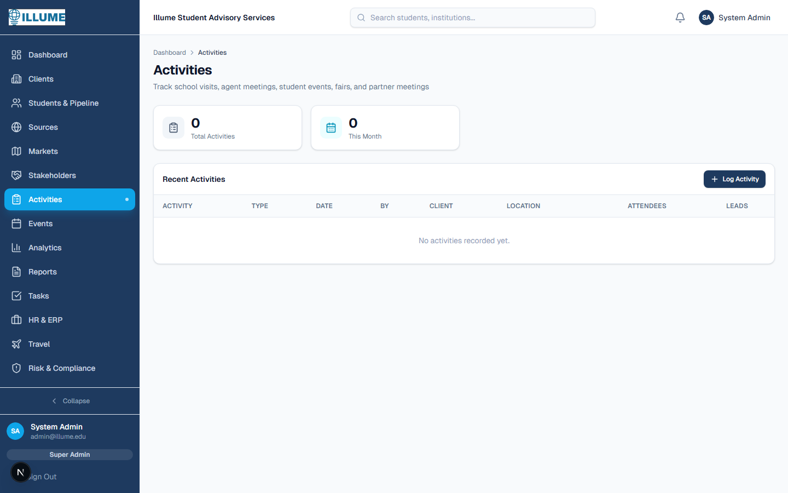
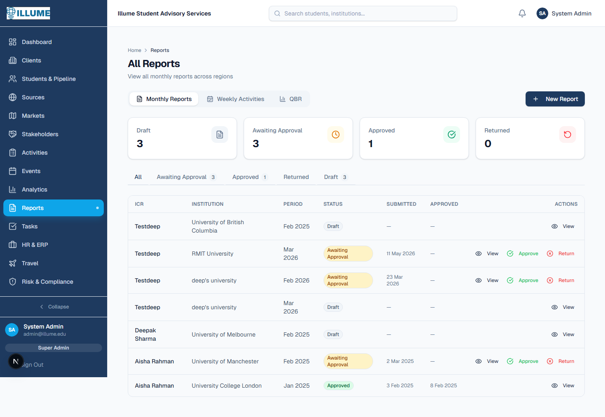
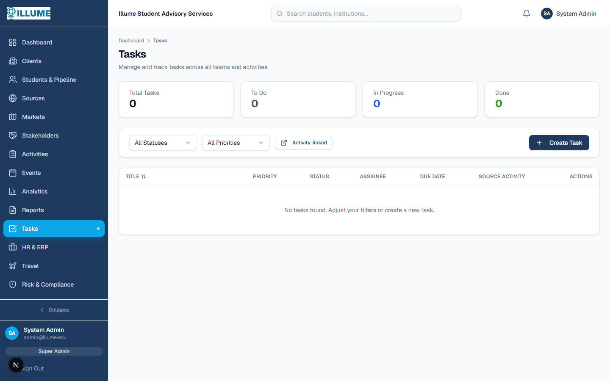
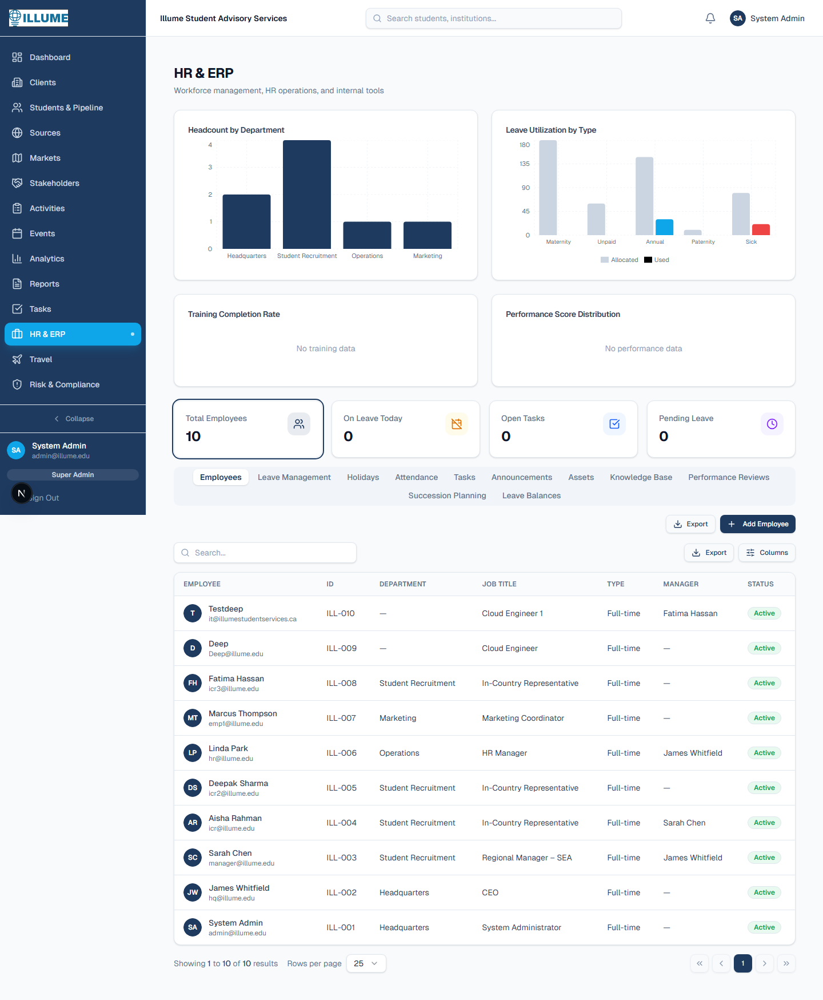
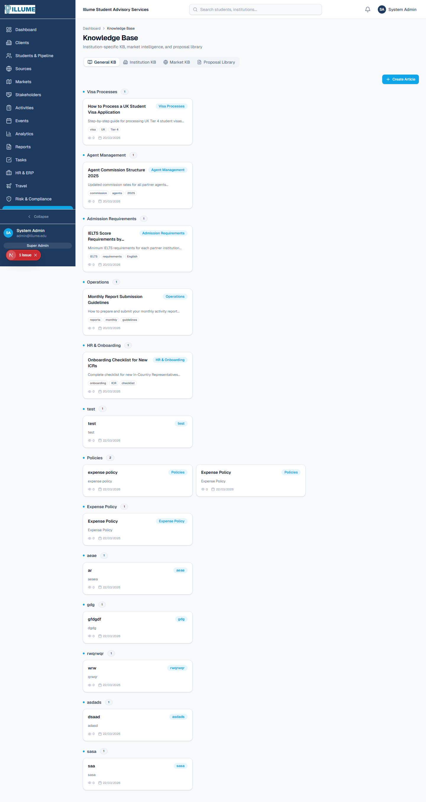
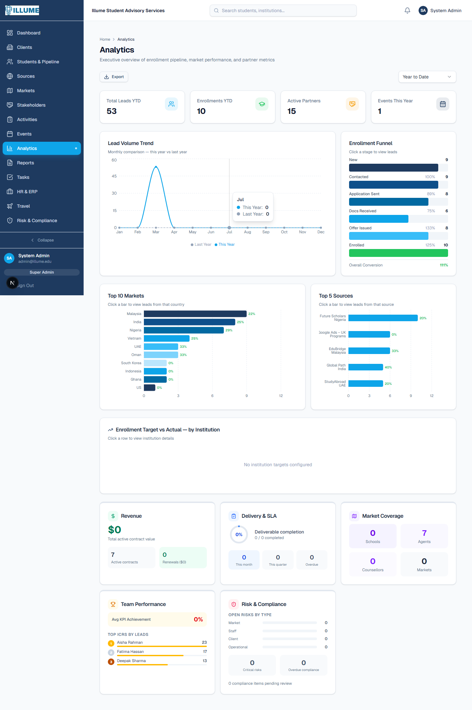
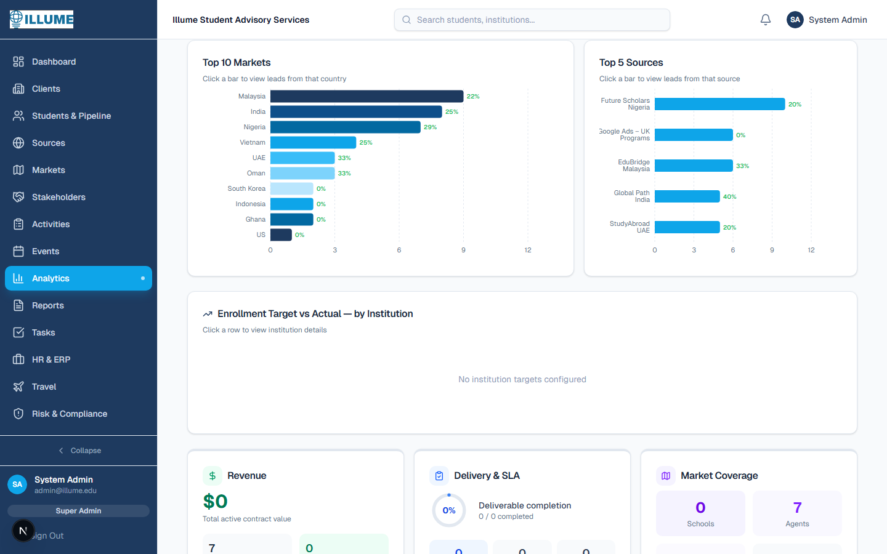
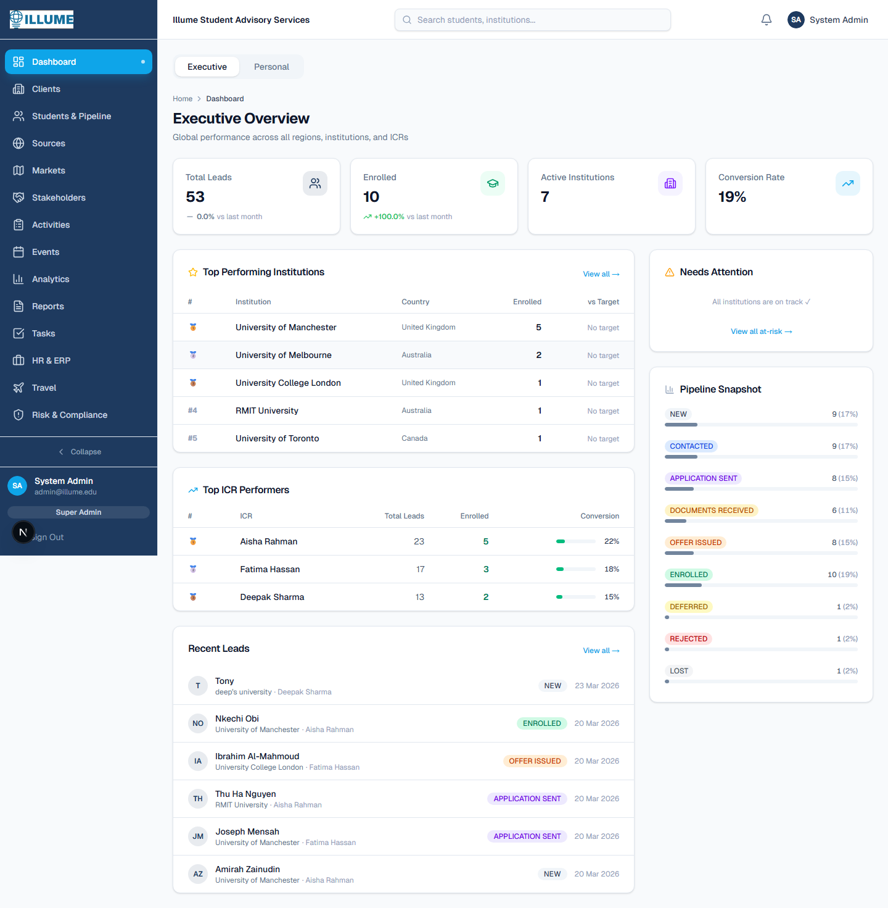

Illume CRM — RFP Module Implementation Report
Complete implementation of all 12 modules from the CRM Development Notes (RFP-based assessment)
Date: July 6, 2026
Table of Contents
Client Management
Fixed institution PATCH API and added full CRUD for ClientKPIs, Deliverables, and Documents.
Changes Made
- PATCH API fixed — Now accepts contractValue, renewalDate, budgetTotal, budgetUsed, strategicObjectives, overview, accountManagerId
- ClientKPI CRUD API — GET/POST at
/api/institutions/[id]/kpis, PATCH/DELETE at/api/institutions/[id]/kpis/[kpiId] - Deliverable CRUD API — GET/POST at
/api/institutions/[id]/deliverables, PATCH/DELETE at/api/institutions/[id]/deliverables/[deliverableId] - Document API — GET/POST at
/api/institutions/[id]/documents - KPI Manager UI — New component added to institution detail tabs with category grouping, progress bars, inline updates
Files
Modified app/api/institutions/[id]/route.ts
New app/api/institutions/[id]/kpis/route.ts
New app/api/institutions/[id]/kpis/[kpiId]/route.ts
New app/api/institutions/[id]/deliverables/route.ts
New app/api/institutions/[id]/deliverables/[deliverableId]/route.ts
New app/api/institutions/[id]/documents/route.ts
New app/(dashboard)/institutions/[id]/_components/kpi-manager.tsx
Market Management
Full CRUD API, market detail page with 5 tabs, intelligence editing, and clickable market cards.
Changes Made
- Market CRUD API — GET with search/POST, PATCH, soft DELETE
- Market Detail Page — 5 tabs: Overview, Intelligence, Schools, Activities, Risks
- Intelligence Tab — 7 editable text areas for market data (student mobility, competitors, visa/currency trends, govt stakeholders, industry associations)
- Markets Listing Updated — Cards now clickable, "Create Market" button added
- Schema — Added govtStakeholders and industryAssociations fields to Market model

Stakeholder Management
Full CRUD APIs for Schools, Counsellors, and Agents. Agent performance dashboard with tier distribution and yield ranking.
Changes Made
- Schools CRUD API — with search, market filter, computed relationship score
- Counsellors CRUD API — with school filter, influence score tracking
- Agent Profiles CRUD API — with tier filter, upsert support, performance data (offers, deposits, enrolments, visa approvals, yield rate)
- 4-Tab Stakeholders Page — Schools, Agents, Counsellors, Performance tabs with create forms
- Agent Performance Dashboard — Tier distribution, top performers, visa approval chart, yield ranking

Activity Management
Full CRUD API with ROI auto-calculation and per-type creation forms for all 5 activity types.
Changes Made
- Activity CRUD API — GET with type/search filters, POST with nested attendees and action items
- ROI Auto-Calculation — For FAIR type: roi = leadsGenerated / cost
- Per-Type Forms — School Visit (blue), Agent Meeting (amber), Student Event (cyan), Fair (violet), Partner Meeting (green)
- Action Items — Structured JSON field with dynamic add/remove UI for agent meetings
- Schema — Added roi, actionItems (Json), and topics fields to Activity model

Travel Management
Entirely new module — full CRUD API, reporting endpoint, travel plans page with itinerary builder.
Changes Made
- Travel CRUD API — GET with status/employee filters, POST with nested itinerary items and meetings
- Travel Reporting API — Aggregated stats: total trips, cost, schools/agents visited, cost per trip, destination breakdown
- Travel Page — Stats row (Total Trips, Total Cost, Avg Cost/Trip, Schools Visited), Travel Plans tab with table, Travel Reporting tab
- Create Travel Plan Dialog — Basic fields + dynamic itinerary builder (flights, hotels, transfers) + dynamic meetings builder
- Sidebar — "Travel" nav item with Plane icon added

KPI Management
ClientKPI CRUD UI on institution pages with category grouping, progress bars, and inline updates.
Changes Made
- KPI Manager Component — Year selector, KPIs grouped by 4 categories (Recruitment, Market Development, Relationship, Engagement)
- Category Visualization — Distinct icons and colors per category, progress bars with percentage indicators
- Inline Updates — Quick currentValue input on each KPI card
- Add/Edit/Delete Dialogs — Full form with category, name, target, unit, period fields
- Institution Tabs — "KPIs" tab added to institution detail page
Files
New app/(dashboard)/institutions/[id]/_components/kpi-manager.tsx
Modified app/(dashboard)/institutions/[id]/_components/institution-tabs-client.tsx
Reporting Engine
Weekly report generator, QBR auto-generation with narrative text, PDF export, and all report sections exposed.
Changes Made
- Report Editor Enhanced — 5 report sections now editable: Engagement Notes, Challenges & Opportunities, Success Stories, Market Insights, Next Month Plan
- Weekly Report Generator API — Auto-generates weekly summary from activities and pipeline data
- QBR Auto-Generator — Aggregates MonthlyReports, ClientKPIs, Activities, and Leads to produce executive summary, market performance, ROI analysis, strategic recommendations
- QBR Page — Table listing, "Generate QBR" dialog, view/edit/delete QBRs
- PDF Export — Print-ready HTML endpoint with @media print styling
- QBR Tab — Added to Reports page for HQ and RM roles


Tasks & Accountability
Standalone task management page with activity linking, filters, quick status toggle, and auto-task generation utility.
Changes Made
- Task-Activity Link — sourceActivityId FK on Task model, tasks can now be linked to the activity that created them
- Activity Tasks API — GET/POST tasks linked to a specific activity
- Tasks Page — Summary cards (Total, To Do, In Progress, Done), filter row (status, priority, activity-linked toggle), table with quick status dropdown
- Auto-Task Utility — Generates 3 follow-up task suggestions per activity type (e.g., School Visit → "Send follow-up materials")
- Sidebar — "Tasks" nav item with CheckSquare icon

Risk & Compliance
Full CRUD APIs for risk register and compliance items with management UI, color-coded risk scores, and type-specific badges.
Changes Made
- Risk Register CRUD — Auto-calculated riskScore (likelihood × impact), type/status/institution filters
- Compliance CRUD — ComplianceType enum (GDPR, FOIPOP, CASL, Agent Compliance, Training), auto completedAt on status change
- Risk & Compliance Page — Stats row (Open Risks, Critical Risks, Pending Compliance, Overdue Compliance), two tabs with filter dropdowns
- Risk Score Visualization — Color-coded: green ≤6, amber 7-14, red ≥15, purple ≥20
- Sidebar — "Risk & Compliance" nav item with ShieldAlert icon

HR Module Enhancements
Performance reviews and succession planning with full CRUD, integrated into HR tabs and employee detail pages.
Changes Made
- Performance Review CRUD — List/create/update/delete reviews with employee and reviewer details, auto completedAt
- Succession Plan CRUD — Backup personnel, cross-training, emergency coverage, readiness level (Developing/Ready/At Risk)
- HR Page Tabs — "Performance Reviews" and "Succession Planning" tabs added alongside existing tabs
- Employee Detail — Performance reviews section added to employee profile
- Schema — SuccessionPlan model, contractUrl and jobDescription fields on Employee

Knowledge Management
4-type knowledge base: General, Institution-specific (programs/scholarships), Market-specific (country reports), and Proposal Library (tagged reusable sections).
Changes Made
- KnowledgeBase Model Updated — Added knowledgeType (GENERAL/INSTITUTION/MARKET/PROPOSAL), institutionId, marketId
- Institution KB API — Scoped entries per institution (programs, selling points, scholarships, admissions)
- Market KB API — Scoped entries per market (country reports, competitor analysis, regulatory updates)
- Proposal Library API — Tagged sections from past proposals (GCU, Cardiff, TAFE, etc.) with search
- Knowledge Page — 4 tabs: General KB, Institution KB (with institution selector), Market KB (with market selector), Proposal Library (with category filter + search)
- Sidebar — "Knowledge Base" nav item with BookOpen icon

Executive Command Centre
5 new CEO/COO dashboard widgets added to the analytics page: Revenue, Delivery & SLA, Market Coverage, Team Performance, Risk & Compliance.
Changes Made
- Executive API — Single endpoint returning data for all 6 CEO widgets (parallel queries for performance)
- Revenue Widget (emerald) — Total contract value, active contracts, renewal pipeline count + value
- Delivery & SLA Widget (blue) — SVG donut ring for deliverable completion rate, activities this month/quarter, overdue count
- Market Coverage Widget (violet) — 4 mini stat boxes: schools, agents, counsellors, markets
- Team Performance Widget (amber) — KPI achievement %, top 5 ICR leaderboard with progress bars
- Risk & Compliance Widget (rose) — Risk breakdown by type, critical risk count, overdue compliance


Updated Sidebar Navigation
4 new navigation items have been added to the sidebar, visible based on role permissions:

New API Endpoints
| Method | Endpoint | Module |
|---|---|---|
| GET/POST | /api/institutions/[id]/kpis | 1 - Client Management |
| PATCH/DELETE | /api/institutions/[id]/kpis/[kpiId] | 1 - Client Management |
| GET/POST | /api/institutions/[id]/deliverables | 1 - Client Management |
| PATCH/DELETE | /api/institutions/[id]/deliverables/[id] | 1 - Client Management |
| GET/POST | /api/institutions/[id]/documents | 1 - Client Management |
| GET/POST | /api/markets | 2 - Market Management |
| GET/PATCH/DELETE | /api/markets/[id] | 2 - Market Management |
| GET/POST | /api/stakeholders/schools | 3 - Stakeholders |
| GET/PATCH/DELETE | /api/stakeholders/schools/[id] | 3 - Stakeholders |
| GET/POST | /api/stakeholders/counsellors | 3 - Stakeholders |
| PATCH/DELETE | /api/stakeholders/counsellors/[id] | 3 - Stakeholders |
| GET/POST | /api/stakeholders/agents | 3 - Stakeholders |
| GET/PATCH/DELETE | /api/stakeholders/agents/[id] | 3 - Stakeholders |
| GET/POST | /api/activities | 4 - Activities |
| GET/PATCH/DELETE | /api/activities/[id] | 4 - Activities |
| GET/POST | /api/activities/[id]/tasks | 8 - Tasks |
| GET/POST | /api/travel | 5 - Travel |
| GET/PATCH/DELETE | /api/travel/[id] | 5 - Travel |
| GET | /api/travel/report | 5 - Travel |
| GET | /api/reports/weekly-report | 7 - Reporting |
| GET/POST | /api/reports/qbr | 7 - Reporting |
| GET/PATCH/DELETE | /api/reports/qbr/[id] | 7 - Reporting |
| GET | /api/reports/[id]/pdf | 7 - Reporting |
| GET/POST | /api/risks | 9 - Risk & Compliance |
| GET/PATCH/DELETE | /api/risks/[id] | 9 - Risk & Compliance |
| GET/POST | /api/compliance | 9 - Risk & Compliance |
| PATCH/DELETE | /api/compliance/[id] | 9 - Risk & Compliance |
| GET/POST | /api/hr/performance-reviews | 10 - HR |
| GET/PATCH/DELETE | /api/hr/performance-reviews/[id] | 10 - HR |
| GET/POST | /api/hr/succession-plans | 10 - HR |
| PATCH/DELETE | /api/hr/succession-plans/[id] | 10 - HR |
| GET/POST | /api/institutions/[id]/knowledge | 11 - Knowledge |
| GET/POST | /api/markets/[id]/knowledge | 11 - Knowledge |
| GET/POST | /api/knowledge/proposals | 11 - Knowledge |
| GET | /api/analytics/executive | 12 - Executive |
Deployment Notes
- Database migration required — Run
npx prisma migrate dev(ornpx prisma db push) to apply schema changes - No new dependencies — All features built with existing stack (no new npm packages required)
- PDF export — Uses browser print dialog (window.print), no server-side PDF library needed
- Backward compatible — All new fields are optional; existing data is unaffected
- New Prisma enums — ComplianceType, QBRStatus, KnowledgeType added
- New Prisma models — SuccessionPlan, QuarterlyBusinessReview added
Generated by Claude Code — Illume CRM RFP Implementation, July 2026